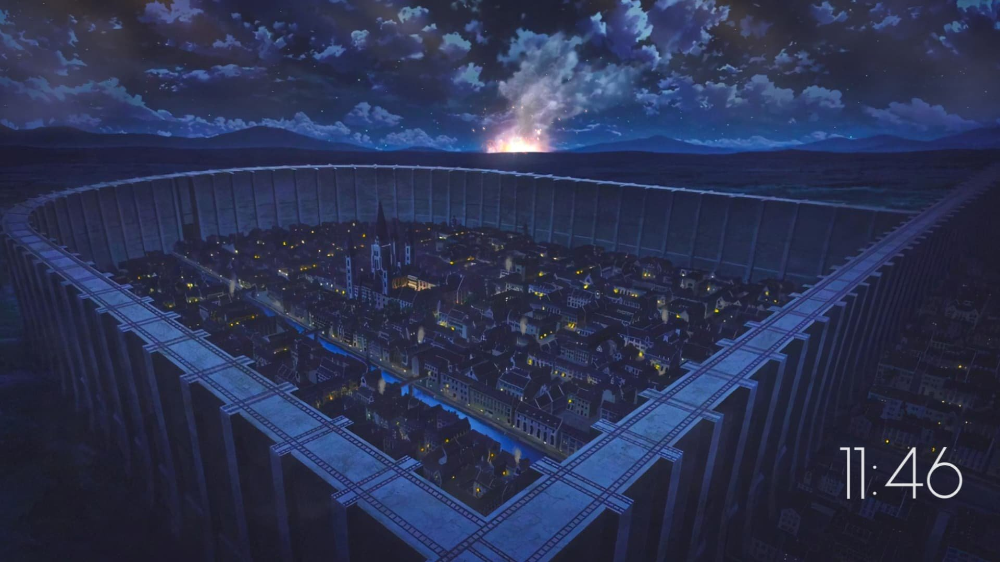

Attack on Titan
Attack on Titan (Japanese: 進撃の巨人, Hepburn: Shingeki no Kyojin, lit. 'The Advancing Giant') is a Japanese manga series written and illustrated by Hajime Isayama. It is set in a world where humanity is forced to live in cities surrounded by three enormous walls that protect them from gigantic man-eating humanoids referred to as Titans; the story follows Eren Yeager, who vows to exterminate the Titans after they bring about the destruction of his hometown and the death of his mother. It was serialized in Kodansha's monthly magazine Bessatsu Shōnen Magazine from September 2009 to April 2021, with its chapters collected in 34 tankōbon volumes.
Attack on Titan has become a critical and commercial success. By November 2023, the manga had over 140 million copies in circulation, making it one of the best-selling manga series of all time. It has won several awards, including the Kodansha Manga Award, the Attilio Micheluzzi Award, and the Harvey Award.

Synopis
The story of Attack on Titan centers on a civilization inside three circular walls. According to the knowledge propagated locally, it is the last surviving vestige of human civilization. Its inhabitants, known as Eldians, have been led to believe that over one hundred years ago, humanity was driven to the brink of extinction after the emergence of humanoid giants called Titans, who attack and eat humans on sight. The last remnants of humanity retreated behind three concentric walls and enjoyed roughly a century of peace. Within the walls, the thought of venturing outside is strongly frowned upon and discouraged. To combat Titans, the country's military employs Vertical Maneuvering Equipment (VME), also called Omni-Directional Maneuvering Gear (ODM Gear): a set of waist-mounted grappling hooks and gas-powered propulsion enabling mobility in three dimensions. Swords made of ultrahard steel are used in conjunction with the gear, and eventually rocket launcher–like weapons called Thunder Spears are developed.
Media
Attack on Titan is written and illustrated by Hajime Isayama. The series began in the first-ever issue of Kodansha's monthly publication Bessatsu Shōnen Magazine, released on September 9, 2009. [27] The manga was finished after an eleven-year publication run with the release of its 139th chapter on April 9, 2021.[25] On November 8, 2020, it was announced that the manga would get a full color serialization.[28] Kodansha collected its chapters in 34 tankōbon volumes, released from March 17, 2010, to June 9, 2021.[29][25]